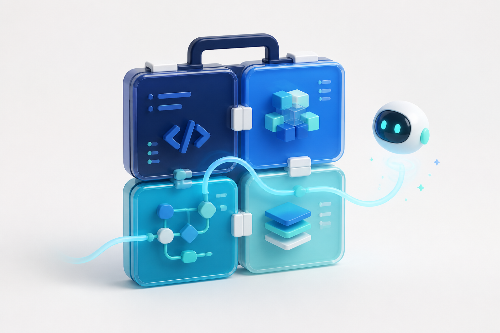

Team onboarding
Dev
Toolbox
Useful browser tools. A visible delivery system. A repository designed for people and Codex to work together.

Team onboarding
Useful browser tools. A visible delivery system. A repository designed for people and Codex to work together.

01 / Why
Small conversions often send developers through tabs, snippets, and untrusted sites.
Tokens and payloads should remain in the browser whenever persistence is unnecessary.
A shared toolbox gives common tasks one predictable, testable home.
02 / Product
Inspect header and payload.
eyJhbGciOi... → { sub, exp }Validate and pretty-print.
{"ok":true} → indented JSONConvert in both directions.
0 → 1970-01-01T00:00:00ZCreate v1, v4, or v7 values.
019... → copy or regenerate03 / Difference
Versioned scope and acceptance criteria.
Stitch evidence and explicit UI approval.
Feature-owned behavior with clear boundaries.
Tests, pull request, and preview status.
Traceability lets a teammate see what was requested, approved, changed, and verified.
04 / Collaboration
05 / Instructions
06 / Real feature
features/uuid/→3 test levels→PR #9UUID v1, v4, and v7 generation logic.
Generate, select version, copy, clear, and save.
Requirement, Stitch HTML/PNG, tests, commit, PR, preview.
07 / Data flow
Input → feature logic → result. No server request is needed for decoding, formatting, conversion, or generation.
A successful result can be validated by the API and persisted through a server-only repository.
08 / Ownership
| Task | Primary location | Remember |
|---|---|---|
| Add a developer tool | features/, thin route, lib/tools.ts | Add focused tests and Stitch evidence. |
| Change shared navigation | components/layout/ | The registry remains the tool source of truth. |
| Change saved runs | features/runs/, API, migration | Keep service-role access server-only. |
| Change visual language | DESIGN.md and Stitch artifacts | Obtain explicit UI approval first. |
09 / Quality
Does the tool produce the right result for normal input?
UUID version + formatDo validation, controls, copy, clear, and save behave correctly?
Visible user statesCan the user recover from malformed input, API failure, or repeated actions?
Error recovery10 / Security
SUPABASE_SERVICE_ROLE_KEY must not enter client components, public variables, commits, screenshots, or generated design evidence.
Review every diff and artifact for secrets before delivery.
11 / Current state
Delivery evidence is recorded.
Check each requirement for its exact next action.
docs/FEATURE_STATUS.md contains owners, blockers, approval state, and evidence.
Avoid memorizing this slide—the checked-in status file is designed to change.
12 / First 30 minutes
Read README, AGENTS, and architecture.
Start the app and open the UUID tool.
Find its route, feature logic, registry entry, and tests.
Run a focused test and inspect the requirement evidence.
13 / Before you start
Check its status, acceptance criteria, and blockers.
Application implementation waits for explicit approval.
Add persistence only when the requirement needs it.
Keep scope and review cost easy to understand.
Takeaway
Everything between those points should be understandable to the next teammate.